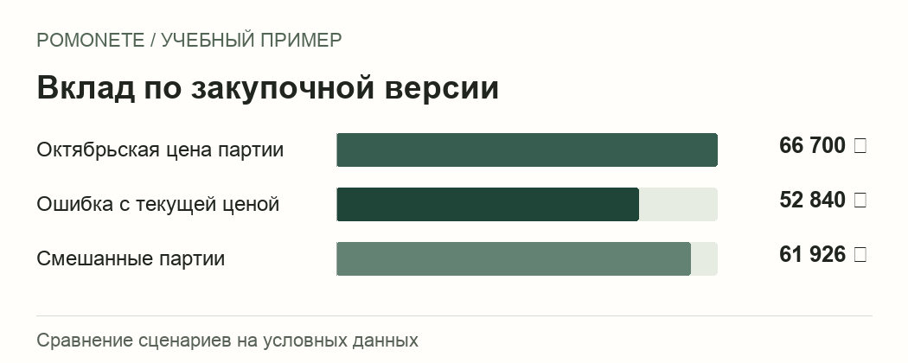

Себестоимость изменилась сегодня, а старые заказы остались. Аналитика селлера
Как применять историческую закупку к продажам Яндекс Маркета по выбранной дате действия цены.
В складской таблице поставщик поменял цену на стойки. После её обновления у селлера Яндекс Маркета снизилась маржа за прошлые недели. Так бывает, если отчёт соединяет историческую продажу с текущей строкой закупки. Нужны дата действия и понятный способ отнесения партии.
Как сохранять несколько версий
У одной модели запишите интервал действия стоимости и основание изменения. При списании по партиям свяжите проданные штуки с выбранной партией. Если внутри используется средняя стоимость, сохраните её фактическое значение на дату, определённую последовательной методикой.
Чтобы пересобрать расчёт «Вклад по закупочной версии» для своего магазина, перенесите в него исходные числа. В формуле A обозначает «доход с доставки, ₽», B обозначает «себестоимость и переменные расходы, ₽», C обозначает «доставки», D обозначает «разовые расходы, ₽». Удельную разницу умножают на количество. Последняя величина относится ко всему сценарию и учитывается один раз. Запишите рядом период и охват каждого среза. Если для одной строки известна только оценка, оставьте пояснение непосредственно рядом с ней: по итоговой цифре источник уже не восстановить.
Вклад по закупочной версии = (A − B) × C − D
| Условие | Доход с доставки, ₽ | Себестоимость и переменные расходы, ₽ | Доставки | Разовые расходы, ₽ | Вклад по закупочной версии |
|---|---|---|---|---|---|
| Октябрьская цена партии | 1 410 | 960 | 154 | 2 600 | 66 700 ₽ |
| Ошибка с текущей ценой | 1 410 | 1 050 | 154 | 2 600 | 52 840 ₽ |
| Смешанные партии | 1 410 | 991 | 154 | 2 600 | 61 926 ₽ |

В сценарии «Октябрьская цена партии» в формулу подставляем доход с доставки, ₽ = 1 410, себестоимость и переменные расходы, ₽ = 960, доставки = 154, разовые расходы, ₽ = 2 600. Получается 66 700 ₽. Взята версия стоимости, действовавшая для проданных единиц по внутреннему учёту.
В сценарии «Ошибка с текущей ценой» в формулу подставляем доход с доставки, ₽ = 1 410, себестоимость и переменные расходы, ₽ = 1 050, доставки = 154, разовые расходы, ₽ = 2 600. Получается 52 840 ₽. При присоединении справочника старая стоимость заменена новой.
В сценарии «Смешанные партии» в формулу подставляем доход с доставки, ₽ = 1 410, себестоимость и переменные расходы, ₽ = 991, доставки = 154, разовые расходы, ₽ = 2 600. Получается 61 926 ₽. Взята рассчитанная средняя по фактически списанным партиям в учебном примере.
Если «Октябрьская цена партии» взять за исходную точку, «Ошибка с текущей ценой» меняет показатель «вклад по закупочной версии» на -13 860 ₽, а «Смешанные партии» на -4 774 ₽. Между двумя последними строками разница составляет 9 086 ₽ при вычитании второй из третьей. Смотрите, какой именно вход изменился между строками. Если менялись объём и условия одновременно, итог сравнения относится ко всему сочетанию.
Запишите отдельно результат по обычным условиям «Октябрьская цена партии» (66 700 ₽) и результат по уточнённым условиям «Смешанные партии» (61 926 ₽). Если обе оценки получились по одному правилу, следующий вопрос касается исходных данных. Проверьте, сохраняется ли направление сравнения, если вернуть одно нестабильное условие к исходному. Сценарии полезно привязывать к операционному событию, по которому можно проверить, что новый режим действительно произошёл.
Где цена переопределяется задним числом
Поставщик может прислать документ позже, а оценка внутри магазина будет поправлена. Историю лучше хранить с датой события и датой поступления исправления. Тогда сумма для старого оперативного решения и актуально подтверждённая сумма обе доступны.
Проверьте переход от первичной записи до показателя «вклад по закупочной версии». Колонки «доход с доставки, ₽, себестоимость и переменные расходы, ₽, доставки, разовые расходы, ₽» могут поступить разными путями. Пройдите пример, где дата и сумма видны в исходнике, до последней строки. Для этого подойдут исходная выгрузка, журнал загрузок и контрольные суммы. Затем возьмите один случай с исключением и убедитесь, что результат можно восстановить по сохранённому правилу.
Перед обновлением отчёта сохраните источник, параметры запроса, время выгрузки и число строк на каждом шаге. Сначала проверяют ключ и единицу наблюдения, потом сравнивают итоговые суммы. Одно и то же значение в двух строках может быть законным: совпадение суммы само по себе слабо доказывает дубль. Подключив справочник, проверьте, какие записи не сопоставились, и разнесите их по причинам до пересчёта показателя.
Что сильнее всего меняет результат
Для «вклад по закупочной версии» начнём с результата 52 840 ₽. В «Ошибка с текущей ценой» условно меняем «доход с доставки, ₽», «себестоимость и переменные расходы, ₽», «доставки», «разовые расходы, ₽» по очереди. Шаг округляем до целой исходной единицы около 10%. Сравнение относится к одной строке расчёта. При сильной сезонной смене его полезно повторить и на второй базе с другим доступным объёмом.
- «Доход с доставки, ₽» меняется с 1 410 на 1 551. При прежних остальных входах получается 74 554 ₽, сдвиг составляет 21 714 ₽.
- «Себестоимость и переменные расходы, ₽» меняется с 1 050 на 1 155. При прежних остальных входах получается 36 670 ₽, сдвиг составляет -16 170 ₽.
- «Доставки» меняется с 154 на 169. При прежних остальных входах получается 58 240 ₽, сдвиг составляет 5 400 ₽.
- «Разовые расходы, ₽» меняется с 2 600 на 2 860. При прежних остальных входах получается 52 580 ₽, сдвиг составляет -260 ₽.
Самый заметный эффект дали данные по «доход с доставки, ₽»: 21 714 ₽. Подготовьте второй тест с двумя входами, которые обычно меняются вместе. Сравните его с одиночной подстановкой. Различие покажет, хватит ли следить за одной строкой при выбранном действии или в отчёте понадобится связанная пара наблюдений.
Если один и тот же SKU подключён к нескольким магазинам с разными остатками, одна текущая цена ещё менее полезна. Для управленческого PnL разнесите партии по фактической принадлежности, а общую оценку покажите на уровне бизнеса после сверки.
Как проверить первые расхождения
Найдите периоды перед сменой закупки и после неё по нескольким позициям. Сверьте количество полученных и списанных штук. Если продажи закрыты, исправляйте источник с контрольной суммой, чтобы изменения прошлых месяцев были видны руководителю.
При повторном импорте берите ту же исходную выборку и фиксируйте, какие записи действительно изменились. В стабильном отчёте сумма после второго прогона того же набора остаётся равной первой. Отложенные корректировки могут изменить поздний снимок, поэтому журнал версий пригодится для ответа на вопрос, когда возникло отличие. Дайте пользователю отчёта ссылку на строку, которую можно проверить вручную.
При еженедельной сверке поставьте рядом сценарий «Смешанные партии» и реально наблюдавшееся значение. Если оценка стала систематически расходиться с результатом, назовите источник и предложите измерение меньшего масштаба. Для селлера Яндекс Маркета такой шаг важен, когда тот же показатель собирают разные сотрудники или несколько складов.